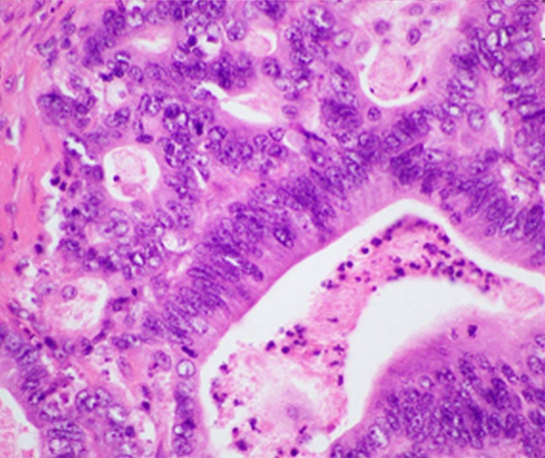

Información divulgativa. No sustituye la valoración de tu equipo médico ni sirve para decidir un tratamiento.


En resumen
| Frecuencia | 510.000 casos al año en el mundo; unos 10.300 en España, y en aumento |
| Mortalidad | Casi tantas muertes como casos; tercera causa de muerte por cáncer en España |
| Tipo | Adenocarcinoma ductal (90 %) |
| Factores de riesgo | Tabaco, obesidad, diabetes de reciente comienzo, pancreatitis crónica, alcohol, herencia (BRCA2, Lynch...) |
| Señales | Ictericia sin dolor, pérdida de peso, dolor de espalda, diabetes nueva |
| Tratamiento | Cirugía (solo en un 15-20 %) con quimioterapia (FOLFIRINOX); quimioterapia en la enfermedad avanzada |
| Supervivencia | Alrededor del 10 % a cinco años; 25-40 % si se puede operar |
Qué es
El páncreas es una glándula situada detrás del estómago con dos funciones: fabricar jugos digestivos (parte exocrina) e insulina y otras hormonas (parte endocrina). El 90 % de sus cánceres son adenocarcinomas ductales, que nacen en los conductos de la parte exocrina. Los tumores de la parte endocrina son los tumores neuroendocrinos de páncreas, muy distintos y de mejor pronóstico.
Tiene un estroma denso que dificulta la llegada de los fármacos, y casi siempre una mutación de KRAS.
Lesiones precursoras
- PanIN (neoplasia intraepitelial pancreática), microscópicas.
- Neoplasias quísticas: la neoplasia mucinosa papilar intraductal (NMPI/IPMN) y el cistoadenoma mucinoso, que pueden malignizarse. Se detectan a menudo por casualidad en una TC o resonancia; se vigilan o se operan según su tamaño y características (criterios de Fukuoka y guía europea).
Cuántos casos hay
Su incidencia aumenta en Europa, y como los avances han sido lentos, se prevé que pase a ser la segunda causa de muerte por cáncer en la UE en esta década. En España se diagnostican unos 10.000 casos al año.
Factores de riesgo
- Tabaco: duplica el riesgo; es la causa evitable más importante.
- Obesidad, sedentarismo, diabetes tipo 2 de larga evolución.
- Pancreatitis crónica, consumo elevado de alcohol.
- Antecedentes familiares (cáncer de páncreas familiar: dos o más familiares de primer grado).
- Mutaciones hereditarias (10 %): BRCA2, BRCA1, PALB2, ATM, síndrome de Lynch, CDKN2A (melanoma familiar), síndrome de Peutz-Jeghers, pancreatitis hereditaria (PRSS1).
Prevención y vigilancia
No hay cribado para la población general. Se recomienda vigilancia con resonancia y ecoendoscopia anual en personas de alto riesgo hereditario o familiar (consorcio CAPS), en unidades especializadas. Dejar de fumar y mantener un peso saludable reducen el riesgo.
Síntomas
Aparecen tarde y son poco específicos:
- Ictericia: piel y ojos amarillos, orina oscura, heces claras y picor. Típica de los tumores de la cabeza del páncreas, que obstruyen la vía biliar. Puede aparecer sin dolor.
- Dolor en la boca del estómago que se irradia a la espalda.
- Pérdida de peso y de apetito, cansancio.
- Diabetes de nueva aparición después de los 50 años sin obesidad, o diabetes que empeora sin motivo.
- Heces grasas (esteatorrea), náuseas, trombosis venosas.
Diagnóstico
- TC con protocolo de páncreas (fases arterial y venosa): la prueba principal; decide si el tumor es operable según su relación con los vasos.
- Ecoendoscopia con punción para la biopsia.
- Resonancia hepática para descartar metástasis pequeñas; PET-TC en algunos casos.
- CA 19-9 en sangre, útil para el seguimiento.
- Colocación de una prótesis biliar si hay ictericia.
- Estudio genético germinal a todos los pacientes y perfil molecular del tumor (BRCA, KRAS no mutado, fusiones de NTRK/NRG1, MSI).
Estadios prácticos
| Categoría | Qué significa | Frecuencia |
|---|---|---|
| Resecable | Se puede operar directamente | 15-20 % |
| Borderline | Toca vasos importantes; quimioterapia primero | 10-15 % |
| Localmente avanzado | Envuelve arterias; no operable de inicio | 30 % |
| Metastásico | Hígado, peritoneo, pulmón | 50 % |
Tratamiento
Cirugía: - Tumores de la cabeza: duodenopancreatectomía cefálica (operación de Whipple). - Cuerpo y cola: pancreatectomía distal con esplenectomía. - Es una cirugía compleja: los resultados son mucho mejores en hospitales de alto volumen.
Quimioterapia: - Tras la cirugía, mFOLFIRINOX durante 6 meses (ensayo PRODIGE 24), con supervivencia media de más de 4 años; gemcitabina con capecitabina si no se tolera. - En borderline y localmente avanzado: quimioterapia primero (neoadyuvante) y, si responde, cirugía. - Enfermedad metastásica: FOLFIRINOX, NALIRIFOX o gemcitabina con nab-paclitaxel. - Mutaciones de BRCA: platino y mantenimiento con olaparib (ensayo POLO). - MSI-H: inmunoterapia. Fusiones NTRK o NRG1: fármacos dirigidos.
Cuidados de soporte, fundamentales: - Enzimas pancreáticas con las comidas para la mala digestión. - Control del dolor, incluido el bloqueo del plexo celíaco. - Nutrición, control de la diabetes, prevención de trombosis. - Cuidados paliativos precoces.
Pronóstico
La supervivencia a cinco años ronda el 10 % globalmente, aunque mejora lentamente. En pacientes operados que completan la quimioterapia, puede alcanzar el 25-40 %.
Novedades
- Inhibidores de KRAS: daraxonrasib (RMC-6236), un inhibidor "RAS(ON) multiselectivo", y otros contra KRAS G12D; los primeros resultados en enfermedad metastásica son los más prometedores en décadas.
- Vacunas de ARNm personalizadas tras la cirugía (estudio con autogene cevumeran, del Memorial Sloan Kettering y BioNTech).
- Detección precoz en personas con diabetes de reciente comienzo y biopsia líquida.
Preguntas para tu equipo
- ¿Mi tumor es operable, borderline o localmente avanzado?
- ¿Cuántas operaciones de Whipple hace este hospital al año?
- ¿Se ha hecho el estudio genético a mí y al tumor?
- ¿Necesito enzimas pancreáticas?
- ¿Hay un ensayo clínico disponible?
Más información
Ver también: Tumores neuroendocrinos de páncreas, Colangiocarcinoma, Riesgo hereditario y consejo genético, Cuidados paliativos.
Fuentes
- Conroy T, et al. Pancreatic cancer: ESMO Clinical Practice Guideline. Ann Oncol. 2023;34:987-1002.
- Conroy T, et al. FOLFIRINOX or gemcitabine as adjuvant therapy for pancreatic cancer (PRODIGE 24). N Engl J Med. 2018;379:2395-2406. doi:10.1056/NEJMoa1809775
- Golan T, et al. Maintenance olaparib for germline BRCA-mutated metastatic pancreatic cancer (POLO). N Engl J Med. 2019;381:317-327. doi:10.1056/NEJMoa1903387
- Rojas LA, et al. Personalized RNA neoantigen vaccines stimulate T cells in pancreatic cancer. Nature. 2023;618:144-150. doi:10.1038/s41586-023-06063-y
- Goggins M, et al. Management of patients with increased risk for familial pancreatic cancer: updated recommendations from the CAPS Consortium. Gut. 2020;69:7-17. doi:10.1136/gutjnl-2019-319352
- SEOM. Las cifras del cáncer en España 2025. seom.org